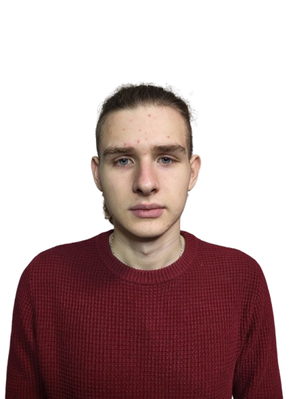

|
 |
|
|||||
Професійні навички
Особистісні характеристики
Освіта
Мови
|
Про себеСтудент 3 курсу спеціальності "Інженерія програмного забезпечення" Державного університету "Київський авіаційний інститут". Прагну досконалості у виконанні завдань, віддаю перевагу глибокому зануренню в проблему для пошуку найефективнішого рішення та швидко навчаюсь. Досвід роботиЗдебільшого маю досвід роботи в особистих та студентських проєктах різних типів, а також деякий досвід комерційної розробки інструментального ПЗ для малого бізнесу та приватних замовників. У межах комерційних проєктів реалізовував:
Хобі та інтереси
|
|||||